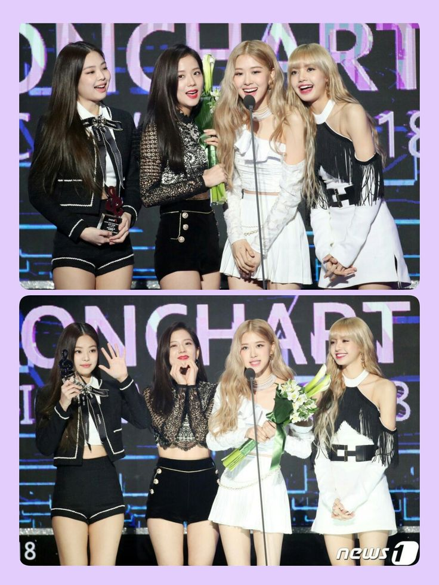
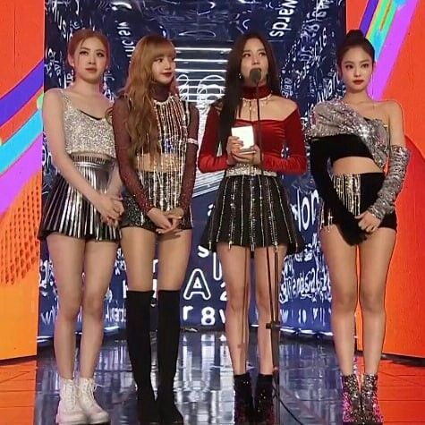

|
Principais premiações
- 🏆 MAMA Awards — 11
- 🏆 Circle Chart Music Awards — 14 - 🏆 Golden Disc Awards — 8 - 🏆 MTV Video Music Awards (VMA) — 5 - 🏆 Melon Music Awards — 5 - 🏆 Seoul Music Awards — 4 - 🏆 People's Choice Awards — 3 - 🏆 MTV Europe Music Awards (EMA) — 1 - 🏆 Billboard Music Awards — 1 - 🏆 Teen Choice Awards — 1 - 🏆 iHeartRadio Music Awards — 1 - 🏆 Japan Gold Disc Awards — 1 - 🏆 Webby Awards — 1 - 🏆 Shorty Awards — 1 - 🏆 Spotify Awards — 1 - 🏆 Tencent Music Entertainment Awards — 2 |
- 🏆 MTV Video Music Awards Japan — 2
- 🏆 Hanteo Music Awards — 2 - 🏆 V Live Awards — 4 - 🏆 Asian Pop Music Awards — 8 - 🏆 Bravo Otto — 4 - 🏆 RTHK International Pop Poll Awards — 3 - 🏆 Soompi Awards — 2 - 🏆 Hallyu K Fans' Choice Awards — 2 Billboard Music Awards - 🏆 Top K-Pop Touring Artist — 2025 🇺🇸 MTV Video Music Awards - 🏆 Best K-Pop — 2023, por "How You Like That" - 🏆 Best Metaverse Performance — 2022, por BLACKPINK: THE VIRTUAL - Além de outras vitórias em anos anteriores. 🇺🇸 People's Choice Awards BLACKPINK ganhou 3 prêmios em 2019: - 🏆 The Group of 2019 - 🏆 The Music Video of 2019 - 🏆 The Concert Tour of 2019 🇰🇷 MAMA Awards BLACKPINK já ganhou 11, incluindo: - 🏆 Best Female Group - 🏆 Best Music Video - 🏆 Worldwide Fans' Choice - 🏆 outras categorias importa |
|
 |
 |
|
fun fact: Tanto o grupo qaunto as integrantes solo, ja concorreram algumas vezes contra elas mesmas em algumas premiações voltar | |